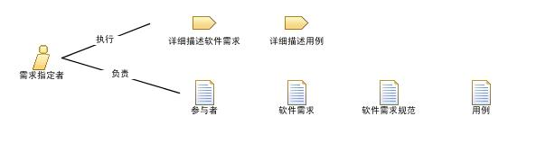

| 角色：需求指定者 |
 |
|
关系
 |
|
| 其他执行 | |
|---|---|
| 修改 | |
| 流程使用情况 | |
主要描述
人员配备
| 技能 |
扮演该角色的人需要有良好的沟通技能，包括口头表达和书面表达能力。对该业务和技术领域的了解也很重要，但这通常并非为充当该角色的每个项目团队成员所必需的。 为了能够有效地履行该角色的职责，扮演该角色的人需要熟悉用来获取需求工作的结果的生产工具。 |
|---|---|
| 分配方法 |
可通过以下方法分配此角色：
|
© Copyright IBM Corp. 1987, 2006. All Rights Reserved. |